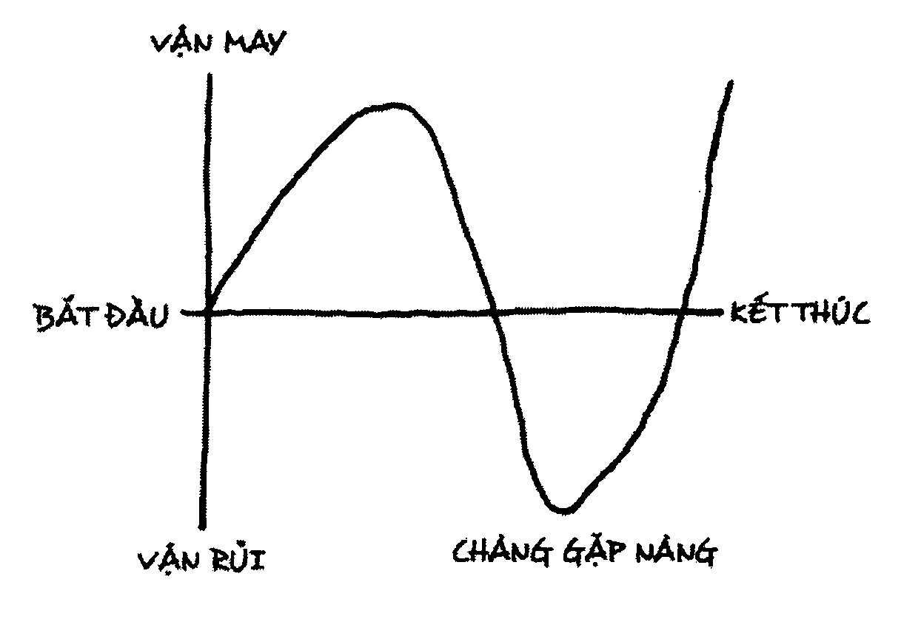

Chương 3
Đây là một bài học về tác văn.
Quy tắc đầu tiên: đừng sử dụng dấu chấm phẩy. Chúng là loài lưỡng tính hoán y hoàn toàn không biểu thị được ý gì cả. Tất cả những gì chúng làm là cho người ta biết bạn đã từng học đại học.
Và tôi nhận thấy một số bạn có lẽ đang băn khoăn không biết có phải tôi đang đùa không. Vì vậy từ giờ trở đi, khi nào tôi đùa tôi sẽ cho các bạn biết.
Chẳng hạn như, hãy gia nhập Vệ binh Quốc gia hay Thủy quân lục chiến và giảng dạy về dân chủ đi. Tôi đùa đấy.
Chúng ta sắp bị Al Qaeda tấn công. Nếu ai có cờ thì vẫy đi. Hình như vẫy cờ luôn làm cho bọn họ sợ mà chạy tóe khói. Tôi đùa đấy.
Nếu bạn muốn thực sự làm cha mẹ khổ tâm mà không đủ can đảm làm người đồng tính, việc tối thiểu bạn có thể làm là gia nhập ngành nghệ thuật. Tôi không đùa đâu. Mấy môn nghệ thuật không phải là cách kiếm sống. Đó là một cách rất nhân văn để làm cuộc sống dễ chịu hơn. Vì Thượng Đế, làm nghệ thuật, cho dù hay dở thế nào cũng được, nó vẫn là một cách làm tâm hồn bạn thăng hoa. Hát dưới vòi sen. Nhảy theo nhạc trên máy phát thanh. Kể chuyện. Làm thơ gửi bạn, dù là một bài thơ dở òm. Làm hết sức mình. Bạn sẽ nhận được một phần thưởng to lớn. Bạn sẽ sáng tạo ra được cái gì đó.
***
Tôi muốn chia sẻ với các bạn một điều tôi đã học được. Tôi sẽ vẽ lên chiếc bảng đen sau lưng tôi để các bạn có thể theo dõi dễ dàng hơn [vẽ một đường thẳng đứng trên bảng]. Đây là trục M-R: vận may - vận rủi. Chết chóc, nghèo đói, bệnh tật khốn cùng ở dưới đây - thịnh vượng, sức khỏe sung mãn ở trên kia. Tình cảnh bình thường của các bạn ở giữa đây [lần lượt chỉ vào đáy, đỉnh và điểm giữa của đường thẳng].
Đây là trục B-K. B viết tắt của bắt đầu, K là kết thúc. Xong. Nhưng không phải câu chuyện nào cũng có hình dạng rất đơn giản, rất đẹp đẽ đến mức ngay cả máy tính cũng hiểu được như vậy. [vẽ đường thẳng nằm ngang kéo dài từ trung điểm trục M-R].
Nào, để tôi cho các bạn một mẹo tiếp thị. Những người nào đủ tiền mua sách báo, tạp chí và đủ tiền đi xem phim thì không thích nghe chuyện về người nghèo khó hay bệnh tật, vì vậy hãy bắt đầu câu chuyện của ta trên đây [chỉ rõ phần đỉnh của trục M-R]. Bạn sẽ gặp đi gặp lại câu chuyện này nhiều lần lắm. Người ta yêu thích nó và không ai giữ bản quyền câu chuyện này cả. Chuyện có tên “Người trong hố”, nhưng chuyện không nhất thiết nói về người hay cái hố nào. Nghĩa là như vầy: Một người rơi vào tình huống rắc rối, rồi lại thoát ra được [vẽ đường A]. Không phải ngẫu nhiên mà đường này có điểm kết thúc cao hơn điểm xuất phát. Làm như vậy là để khích lệ độc giả.

Một chuyện khác có tên “Chàng gặp nàng”, nhưng câu chuyện này không nhất thiết nói về một chàng gặp một nàng [bắt đầu vẽ đường B]. Nghĩa là như vầy: Một người nào đó, một người bình thường, vào một ngày như mọi ngày khác, tình cờ bắt gặp một thứ hết sức tuyệt vời: “Ôi trời, ngày may mắn của mình đây rồi!”… [vẽ đường đi xuống]. “Chết tiệt!”… [vẽ đường đi lên lại]. Và đi lên trở lại.
Nào, tôi không định dọa bạn, nhưng sau khi làm sinh viên ngành hóa ở Cornell, sau cuộc chiến tôi vào trường Đại học Chicago để nghiên cứu nhân chủng học và cuối cùng tôi lấy bằng Thạc sĩ ngành đó. Saul Bellow [11] chung khoa với tôi, và không ai trong chúng tôi từng đi khảo cứu thực tế. Mặc dù chúng tôi chắc chắn đã tưởng tượng ra vài chuyến đi như vậy. Tôi bắt đầu đến thư viện tìm kiếm tư liệu về các nhà dân tộc học, nhà thuyết giáo và nhà thám hiểm – mấy người đế quốc chủ nghĩa ấy - để xem họ đã thu thập được những loại chuyện gì từ người sơ khai. Dù sao thì lấy tấm bằng ngành nhân chủng học là một sai lầm lớn của tôi, vì tôi không chịu được người sơ khai - họ dốt đặc cán mai. Nhưng dù sao thì tôi đã đọc những câu chuyện như vậy, hết chuyện này đến chuyện khác thu thập từ người sơ khai trên khắp thế giới, và những câu chuyện này nhạt nhẽo muốn chết, như trục B-K thẳng đuột ở đây vậy. Vậy đúng rồi. Người sơ khai đáng bị thất bại với những câu chuyện dở ẹc của họ. Quả thực là họ rất lạc hậu. Xem câu chuyện của chúng ta kìa, có chỗ thăng chỗ trầm rất tuyệt.

Một trong những câu chuyện nổi tiếng nhất từng được kể bắt đầu dưới đây [bắt đầu đường c dưới trục B-K]. Nhân vật khổ não này là ai? Đó là một cô bé trạc mười lăm hay mười sáu tuổi có mẹ vừa mới mất, vì vậy làm sao cô không ở dưới thấp cho được? Và gần như ngay lập tức, cha cô cưới về một bà chằn hung dữ có hai cô con gái độc ác. Bạn nghe chuyện này chưa?
Sau đó ở cung điện sắp có dạ tiệc. Cô phải giúp hai người em ghẻ và bà mẹ kế đáng sợ của mình sửa soạn đi dự tiệc nhưng bản thân mình thì phải ở nhà. Bây giờ cô có buồn hơn chút nào nữa không? Không đâu, cô đã là một cô bé tan nát cõi lòng rồi. Cái chết của mẹ cô là quá đủ. Mọi chuyện không thể còn tệ hơn chuyện đó. Rồi thì tất cả đám kia đi dự tiệc. Tiên mẫu đỡ đầu của cô xuất hiện [vẽ đường lên cao từng bậc], ban cho cô quần tất, mascara, và phương tiện di chuyển để đưa cô tới buổi tiệc.

Và khi cô xuất hiện cô là nữ hoàng của buổi khiêu vũ [vẽ đường đi lên]. Cô trang điểm kỹ đến nỗi ngay cả người thân của cô cũng không nhận ra. Sau đó đồng hồ điểm 12 giờ, đúng như giao ước, tất cả mọi thứ lại bị tước đi [vẽ đường đi xuống]. Không mất nhiều thời gian để đồng hồ điểm 12 tiếng, thành thử cô rơi xuống. Cô có rơi xuống mức cũ không? Quỷ thần ơi, không đâu. Cho dù sau đó có xảy ra chuyện gì đi nữa thì cô cũng sẽ nhớ lúc chàng hoàng tử phải lòng cô và cô là nữ hoàng của buổi khiêu vũ. Thế là muốn hay không cô cũng đành bỏ cuộc chơi trong khi đang ở mức cao hơn đáng kể so với lúc trước, rồi chiếc giày vừa chân cô, rồi cô trở nên hạnh phúc vô bờ bến. [vẽ đường đi lên và sau đó là ký hiệu vô cực ].

Còn bây giờ thì có một câu chuyện về Franz Kafka [bắt đầu đường D về phía đáy của trục M-R]. Một anh chàng khá xí trai và không dễ ưa lắm. Anh có nhiều họ hàng khó chịu và đã làm nhiều công việc không có cơ may thăng tiến. Anh không kiếm đủ tiền để dẫn người yêu đi khiêu vũ hay đến quán bia làm một ly với bạn. Một sáng nọ anh thức dậy, lại tới giờ làm rồi, rồi anh biến thành một con gián [vẽ đường đi xuống và sau đó là ký hiệu vô cực] . Đây là một câu chuyện đầy bi quan.
Câu hỏi đặt ra là, hệ thống mà tôi đã sáng tạo ra này có giúp chúng ta thẩm định văn chương không? Có lẽ một kiệt tác thực thụ không thể bị đóng đinh lên thập tự giá thiết kế kiểu này. Còn Hamlet thì sao? Theo tôi đó là một tác phẩm khá hay. Có ai định phản đối không? Tôi không cần phải vẽ thêm một đường mới vì tình cảnh của Hamlet cũng như của cô bé Lọ Lem thôi, trừ một điều là giới tính của họ trái ngược nhau.
Cha chàng vừa mất. Chàng rất khổ não.
Và ngay lập tức mẹ chàng đi cưới người chú là một tên chó chết. Rồi khi Hamlet đang đi dọc theo con đường may rủi của Lọ Lem thì người bạn Horatio đến bên chàng mà nói, “Hamlet, anh nghe đi, có cái thứ gì đó trên tường thành, tôi nghĩ có lẽ anh nên nói chuyện với nó. Cha anh đấy.” Thế là Hamlet đi lên nói chuyện với bóng ma mà, bạn biết đó, chuyện khá quan trọng. Và cái thứ ma quỷ này nói, “Ta là cha của con, ta bị mưu sát, con phải trả thù cho ta, chính người chú của con làm, chuyện như thế này đây.”
Chà, là chuyện may hay rủi đây? Cho tới ngày nay chúng ta vẫn không biết bóng ma đó có thực là cha của Hamlet hay không. Nếu bạn đã từng nghịch mấy tấm bảng cầu cơ, bạn biết rằng có nhiều linh hồn bất thiện đang vật vờ quanh đây, có thể cho bạn biết bất cứ thứ gì, và bạn không nên tin chúng. Madame Blavatsky, người biết về thế giới tâm linh nhiều hơn bất kỳ ai khác, nói rằng bạn là kẻ ngốc mới xem bất cứ bóng ma nào cũng là nghiêm túc, vì chúng thường bất thiện và thường là linh hồn của những người bị mưu sát, tự sát, hay bị lừa lọc thậm tệ khi còn sống bằng cách này hay cách khác, và chúng hiện về để báo oán.
Vậy nên chúng ta không biết được cái thứ ma quỷ này có thực sự là cha của Hamlet không, hoặc đây là chuyện may hay rủi nữa. Và Hamlet cũng chẳng biết. Nhưng chàng nói, được rồi, mình có cách kiểm chứng chuyện này. Mình sẽ thuê kịch sĩ diễn lại cách thức cha bị chú mưu sát theo như con ma nói, rồi mình sẽ cho trình diễn vở kịch này để thử xem chú hiểu nó như thế nào. Thế là chàng cho trình diễn vở kịch. Và nó không giống như truyện Perry Mason [12] đâu. Ông chú không nổi điên lên mà nói, “Ta… ta… Cháu nói đúng, cháu nói đúng, ta làm đấy, ta làm đấy.” Vở kịch thất bại thảm hại. Không phải chuyện may mà cũng chẳng phải chuyện rủi. Sau cú thất bại này, cuối cùng Hamlet nói chuyện với mẹ, đúng lúc đó bức rèm động đậy khiến chàng nghĩ người chú đang nấp đằng sau nên liền nói, “Được rồi, ta chán cái cảnh lưỡng lự chết tiệt này lắm rồi,” nói rồi đâm mũi kiếm xuyên qua bức rèm. Chà, ai rơi ra đây? Chính là tên già mồm Polonius. Tên Rush Limbaugh [13] này đây. Và Shakespeare xem hắn là thằng ngốc đáng bị vứt đi.

Bạn biết đó, những bậc cha mẹ ngờ nghệch cứ nghĩ lời khuyên mà Polonius nói với các con khi chúng sắp đi xa là những gì cha mẹ nên thường xuyên nói với con cái mình, song đó là lời khuyên ngu ngốc nhất trên đời, Shakespeare thậm chí còn nghĩ nó thật khôi hài.
“Đừng đi vay, cũng đừng cho vay.” Nhưng cuộc đời còn là gì khác ngoài chuyện vay mượn và cho nhận bất tận?
“Quan trọng hơn cả, hãy thành thật với bản thân.” Hãy làm kẻ vị kỷ đi!
Không phải chuyện may mà cũng chẳng phải chuyện rủi. Hamlet không bị bắt. Chàng là hoàng tử mà. Chàng có thể giết bất kỳ ai mình muốn. Thế là chàng tiếp tục sống, cuối cùng lâm vào một vụ đọ kiếm tay đôi, và bị mất mạng. Chà, chàng lên thiên đàng hay chàng xuống địa ngục? Hoàn toàn khác biệt. Lọ Lem hay con gián của Kafka? Tôi nghĩ Shakespeare cũng không tin có thiên đàng hay địa ngục như tôi vậy. Và như vậy chúng ta không biết đây là chuyện may hay chuyện rủi.
Tôi vừa mới chứng minh cho các bạn thấy Shakespeare là một người kể chuyện tồi không thua bất kỳ thổ dân Arapaho [14] nào.
Nhưng có một lý do khiến chúng ta nhìn nhận Hamlet là một kiệt tác: đó là Shakespeare cho chúng ta biết sự thật, mà người ta rất ít khi cho chúng ta biết sự thật trong khoảng thăng trầm ở đây [chỉ tấm bảng đen]. Sự thật là, chúng ta biết rất ít về cuộc đời, chúng ta không biết rõ chuyện nào là may và chuyện nào là rủi.
Và nếu tôi chết - phỉ phui - tôi muốn lên thiên đàng để hỏi người phụ trách trên đó, “Này, chuyện may là gì và chuyện rủi là gì vậy?”